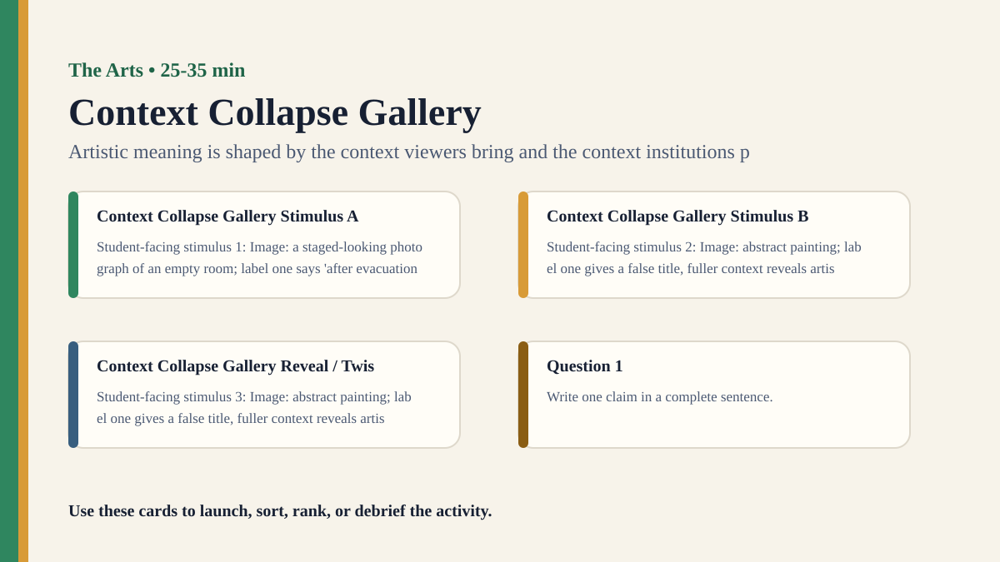

Detailed activity
Context Collapse Gallery
Students interpret an artwork with missing, false, and restored context to see how context changes meaning.
Free classroom activity
Big Idea
Artistic meaning is shaped by the context viewers bring and the context institutions provide.
Teacher Summary
Students compare interpretation under different levels of contextual information.
Use the gallery format to examine whether context reveals meaning or constructs it.
Materials
- One artwork or image and three context labels: no context, misleading context, fuller context.
- Interpretation slips.
Ready to run
Classroom Resource Pack
Use the printable pack for concrete stimulus cards, a student recording sheet, teacher prompts, and a visual prompt image.
Visual Prompt

Student Prompt
Inspect the Context Collapse Gallery stimulus. Record one first claim, the evidence you used, your confidence, and what would make you revise.
Actual Lesson Questions
| # | Question for students | Teacher cue |
|---|---|---|
| 1 | Write one claim in a complete sentence. | Teacher cue: look for a clear claim, not just a description. |
| 2 | List two pieces of evidence. | Teacher cue: students should name visible words, data, source features, method features, or contextual clues. |
| 3 | Separate observation from interpretation. | Teacher cue: this is where assumptions, framing, models, or perspective usually appear. |
| 4 | Circle one confidence level and justify it. | Teacher cue: confidence is data for the debrief, not a grade. |
| 5 | Name one piece of missing information. | Teacher cue: push for method, source, context, comparison, or definitions. |
| 6 | Answer using the activity as evidence. | Teacher cue: students should move from the classroom example to a general TOK issue. |
Concrete Stimulus Packet
Stimulus
Artwork Context Card
Image description: a single chair under a bright window. Title 1: “Waiting”. Title 2: “Evidence”. Title 3: “After the Evacuation”. Students interpret before and after the titles.
Use this to discuss context, title, audience, and evidence for interpretation.Stimulus
Context Collapse Gallery Example
Image: a staged-looking photograph of an empty room; label one says 'after evacuation', fuller context says it is a theatre set.
Use this as the activity-specific version of the stimulus.Stimulus
Comparison / Twist Card
Image: abstract painting; label one gives a false title, fuller context reveals artist intention and exhibition setting.
Reveal after students commit to their first judgement.Teacher Key / Reveal
The key move is not the “right answer”; it is the moment students see how artistic meaning is shaped by the context viewers bring and the context institutions provide.
Setup Notes
- Choose an image that students can interpret without specialized knowledge but that changes with context.
- Prepare the misleading label carefully so it is plausible but later correctable.
Ready-to-Use Examples
- Image: a staged-looking photograph of an empty room; label one says 'after evacuation', fuller context says it is a theatre set.
- Image: abstract painting; label one gives a false title, fuller context reveals artist intention and exhibition setting.
Run Resources
- Three interpretation slips: no context, partial context, fuller context.
- Stability/change table: visual evidence that stayed, meaning that changed.
Procedure
- Show the artwork without context and collect first interpretations.
- Add a misleading or partial label and ask students to revise.
- Reveal fuller context and ask students what changed.
- Groups identify which visual evidence remained stable and which meaning shifted.
- Debrief the role of context, institutions, and audience.
Teacher Language
- Notice what changed in your interpretation even though the image stayed still.
- Which claims were in the artwork, and which claims came from the label?
TOK Debrief Questions
- Knowledge question: Does context reveal meaning or create it?
- Can an interpretation be reasonable if its context is false?
- Who has authority over artistic meaning?
Knowledge Questions
- Does context reveal meaning or create it?
- How do institutions shape knowledge in the arts?
- Can a viewer know an artwork without knowing its context?
Sample Student Output
- I treated the room as documentary evidence until the context revealed it was staged.
- The visual details stayed the same but their meaning changed.
Exhibition Object Idea
An artwork shown with two different wall labels.
Adaptations
- Support: use two labels only.
- Challenge: ask students to defend a reasonable interpretation formed from incomplete context.
Extension Tasks
- Students write two wall labels that make the same image support different interpretations.
- Connect to museum authority and audience knowledge.
Teacher Notes
Use an image with enough ambiguity to support genuine revision.
Keep asking which claims are supported by the image and which depend on context.